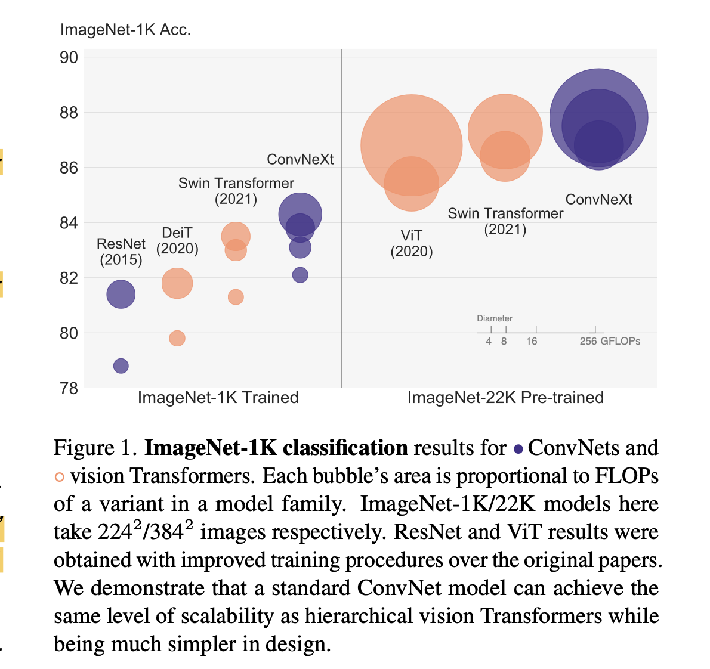
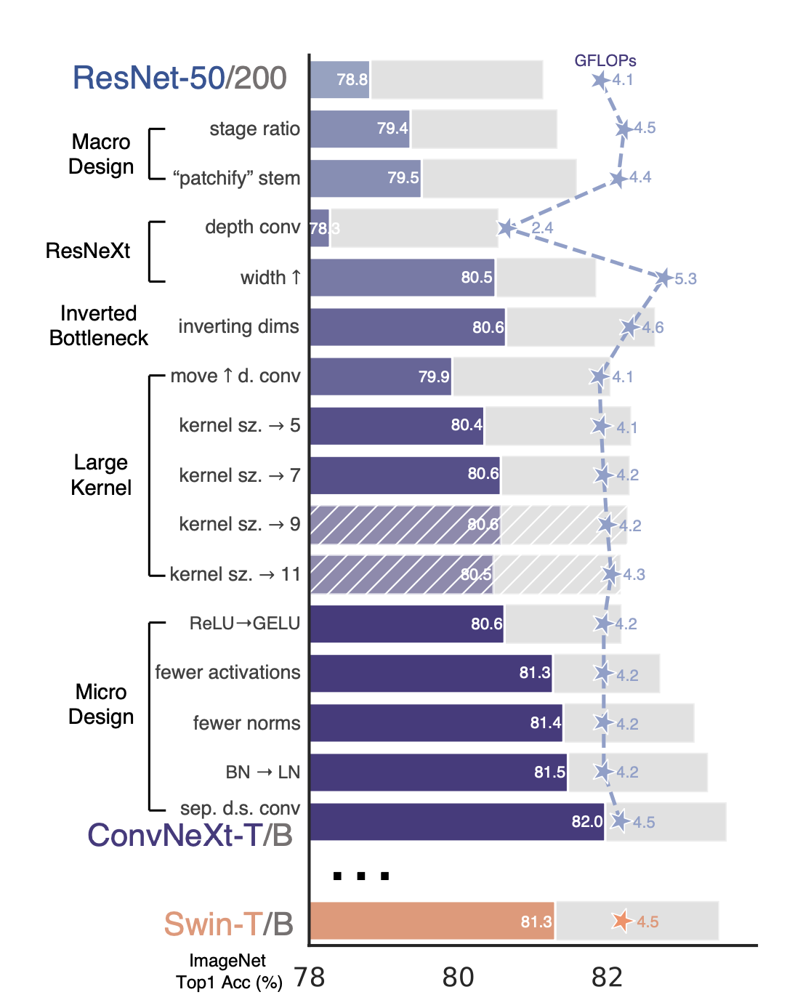
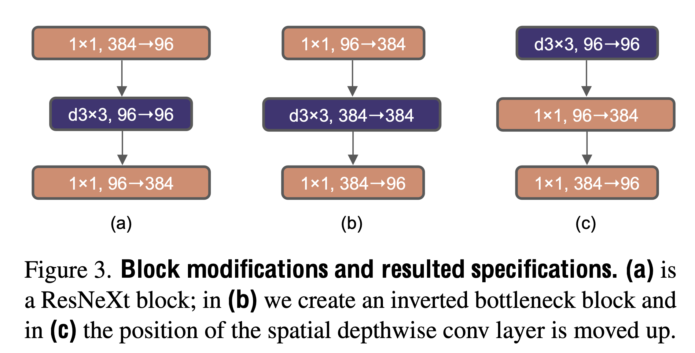
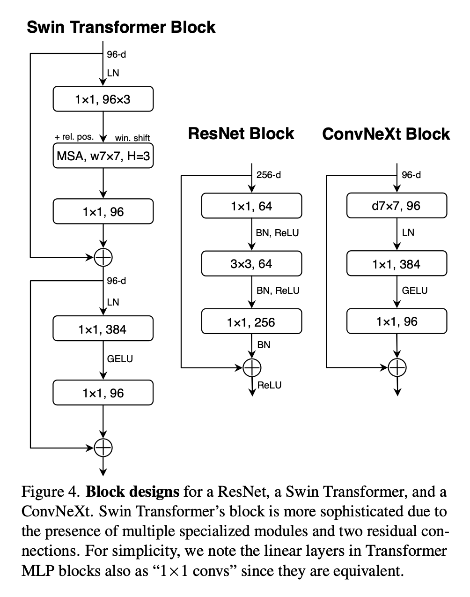
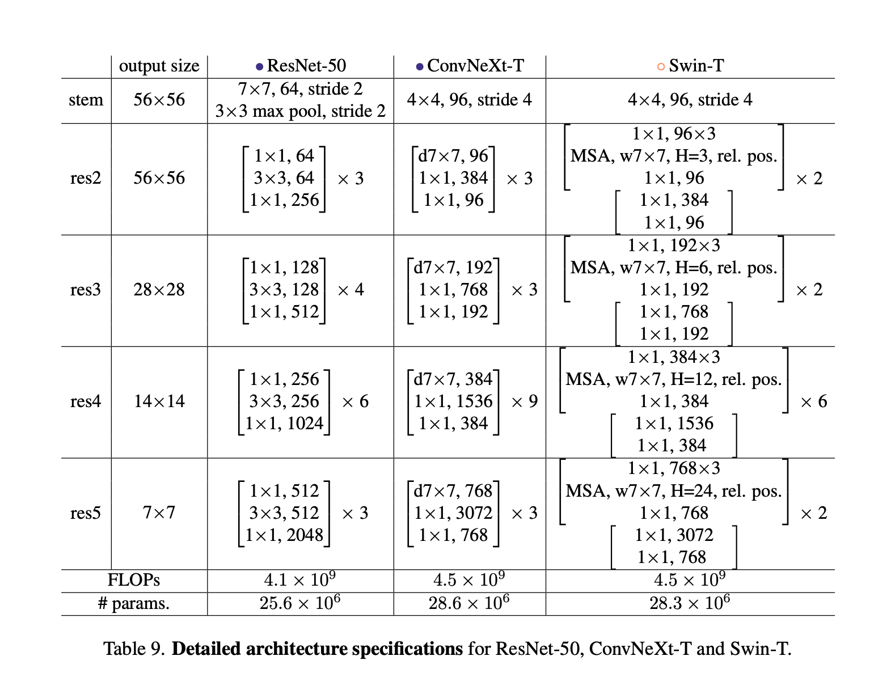
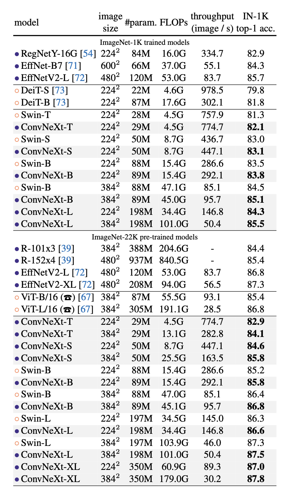
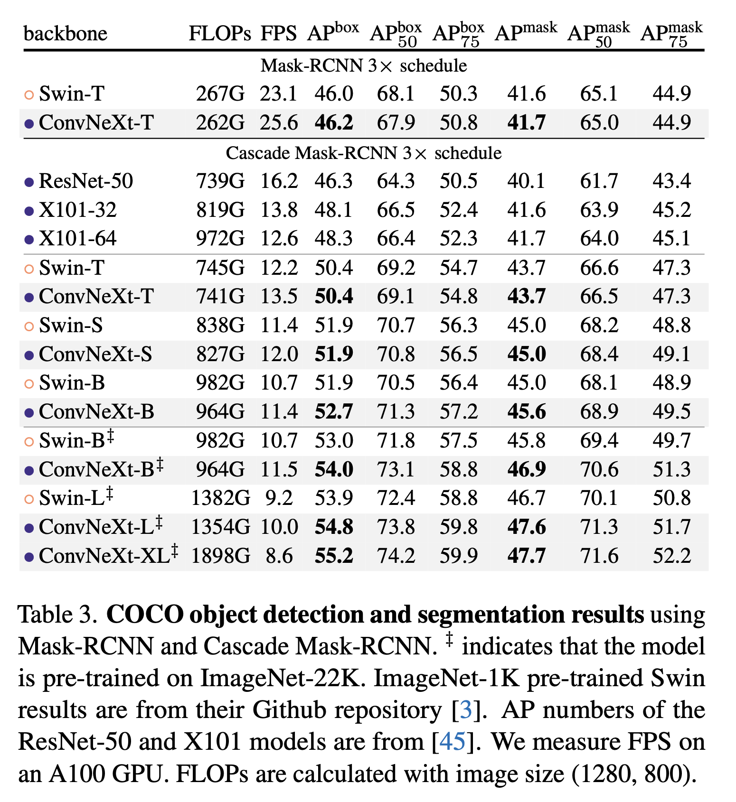
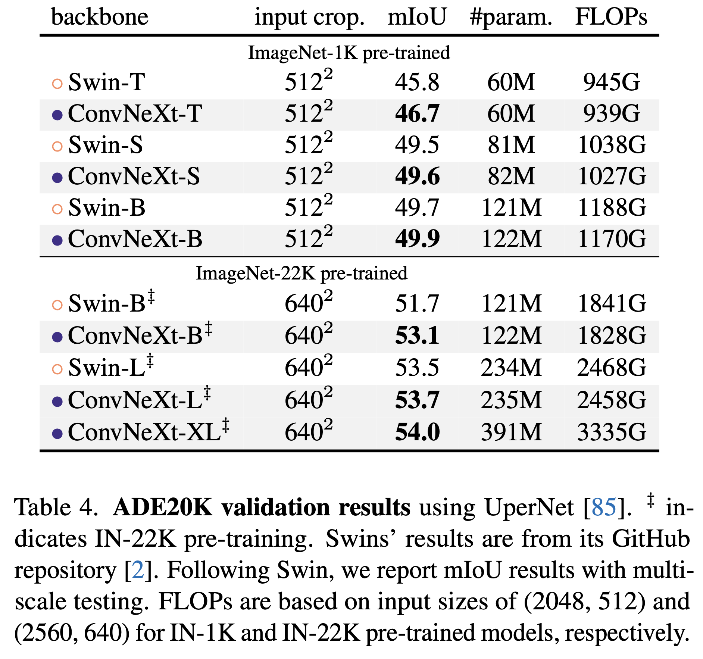

In 2020, Vision Transformers (ViTs) began to outperform ConvNets as the state-of-the-art for image classification.
However, vanilla ViTs faced challenges when applied to general computer vision tasks like object detection and semantic segmentation.
Hierarchical Transformers (e.g., Swin Transformers) reintroduced several ConvNet design principles, making Transformers more viable for a wide range of vision tasks. The “sliding window” strategy (e.g. attention within local windows) allowing them to behave more similarly to ConvNets.
The authors argue that the effectiveness of these hybrid approaches is often credited to the intrinsic superiority of Transformers rather than the inherent benefits of convolutions.
ConvNeXt is a a pure convolutional neural network (ConvNet) architecture designed to compete with modern vision Transformers.
It a Modernized version of a standard ResNet architecture step-by-step. The authors incorporated design elements from vision Transformers such as stage compute ratio, "patchify" stem, fewer normalization layers and activations, etc.
ConvNeXt maintains the simplicity and efficiency of standard ConvNets while incorporating beneficial design choices from Transformers. They achieve performance on par with or better than state-of-the-art vision Transformers like Swin Transformers across various computer vision tasks. Moreover, like Transformers they shows good scaling behavior with model size, similar to vision Transformers.

The paper challenges the notion that Transformers are inherently superior to ConvNets for computer vision tasks, showing that properly designed ConvNets can be equally effective and scalable.
In essence, the paper bridges the gap between traditional ConvNets and modern vision Transformers, demonstrating that many of the advantages of Transformers can be incorporated into a pure ConvNet design.

Trains the baseline ResNet-50 with similar training techniques similar to DeiT's and Swin Transformer's.
Some notable changes are:
Training is extended to 300 epochs from the original 90 epochs
Use the AdamW optimizer
Used Data augmentation techniques:
Regularization schemes used:
They obtain much improved results compared to the original ResNet-50 from 76.1% to 78.8% (+2.7%) by using updated training scripts. All accuracies are reported on ImageNet-1K.
Note, authors fixed training recipe with the same hyperparameters throughout the "modernization" process.
Each reported accuracy on the ResNet-50 regime is an average obtained from training with three different random seeds.
Stage compute ratio
Patchify
The authors adopt the idea of ResNeXt, which has a better FLOPs/accuracy trade-off than vanilla ResNet.
ResNeXt uses grouped convolution, where convolutional filters are separated into different groups. The extreme case of grouped convolution is depthwise convolutions where the number of groups equals the number of channels.
Depthwise convolution is similar to the weighted sum operation in self-attention, operating on a per-channel basis. The combination of depthwise conv and 1x1 convs leads to a separation of spatial and channel mixing, a property shared by vision Transformers.
Using depthwise convolution reduces the network FLOPs and initially decreases accuracy. However, increasing the network width to compensate for the capacity loss, matching Swin-T's channel count (from 64 to 96) brings the network performance to 80.5% with increased FLOPs (5.3G).
Transformer blocks create an inverted bottleneck, where the hidden dimension of the MLP block is four times wider than the input dimension. This design is connected to the inverted bottleneck used in ConvNets, popularized by MobileNetV2 and used in several advanced ConvNet architectures.
The authors use inverted bottleneck design in the ConvNet model.
The change reduces the overall network FLOPs from 5.27G to 4.6G, mainly due to the significant reduction in FLOPs in the downsampling residual blocks' shortcut 1x1 conv layer.
The change slightly improved performance (80.5% to 80.6%) despite the reduced FLOPs.

Replacing ReLU with GELU:
Fewer activation functions:
Fewer normalization layers:
Substituting BN with LN:
Separate downsampling layers:


The authors introduce different ConvNeXt variants: ConvNeXt-T/S/B/L, designed to have similar complexities to Swin-T/S/B/L.
They also introduce a larger ConvNeXt-XL to further test scalability.
The variants differ in the number of channels C and the number of blocks B in each stage.
- ConvNeXt-T: C = (96, 192, 384, 768), B = (3, 3, 9, 3)
- ConvNeXt-S: C = (96, 192, 384, 768), B = (3, 3, 27, 3)
- ConvNeXt-B: C = (128, 256, 512, 1024), B = (3, 3, 27, 3)
- ConvNeXt-L: C = (192, 384, 768, 1536), B = (3, 3, 27, 3)
- ConvNeXt-XL: C = (256, 512, 1024, 2048), B = (3, 3, 27, 3)
Training Settings:
ImageNet-1K top-1 accuracy:

Isotropic ConvNeXt vs. ViT:


Note, the authors use the final model weights (instead of EMA weights) from ImageNet pre-training as network initializations for the downstream tasks.
The properly designed ConvNets can compete with or outperform state-of-the-art vision Transformers across various model sizes and training regimes, while maintaining the simplicity and efficiency advantages of traditional ConvNets.
See the appendix in the paper for more details on architecture, resnet-200 results and training configs.